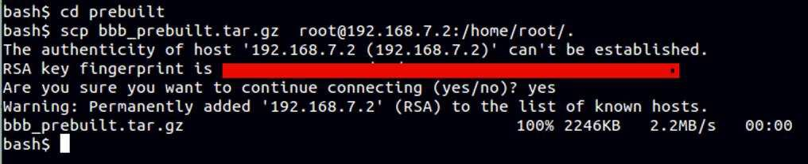

Troubleshooting¶
Troubleshooting should be performed in the layers.
Layer 1—Embedded Devices¶
- Use the Flash Programmer v2 and verify the embedded device is programed correctly. See Programming the CoProcessor Application.
- Attach an LCD BoosterPack™ Plug-in Module to the embedded sensor and verify the screen or use the UART debug output as described in TI-15.4 Stack CC13x0 SimpleLink™ Embedded Example Applications Getting Started Guide
- Program the LaunchPad with a prebuilt embedded Collector Hex file (attach a BoosterPack Plug-in Module LCD, if available) and join the embedded collector with the embedded sensor.
Layer 2—Move to the Linux® Collector Application¶
Is the /dev/ttyACM0 device present or it cannot be opened?
- Verify the device /dev/ttyACM* is present; the LaunchPad uses /dev/ttyACM [0..99]. If not, examine the dmesg output to see if the USB device is being recognized. If not, determine if the USB ACM module is present in your Linux Kernel.
- If you are using a Virtual Machine (VM)—did you disconnect (from the host) and connect the LaunchPad to the VM?
- The collector.cfg file assumes that the name /dev/ttyACM0 is the LaunchPad. If other ACM devices are present, edit the configuration file.
- Are you a member of the group dialout? If so, fo to Step 5. If not, add yourself to this group.
- Some VMs (or kernel drivers and features) take about 10 to 15 seconds to complete the USB process and release the serial port for use by an application. Whereas in the BBB stand-alone Linux machine, the process is complete in about 1 second.
Enable Logging?¶
Change the application configuration file and enable logging (see Log File), enable everything except the SYS items. Within the first 2 or 3 seconds, a series of commands and responses will go to the CoProcessor (the log is very verbose) and complete hex dumps of every message transfer are also included.
Note
It may be helpful to enable dup2stderr = true rather than to review the log files.
The Collector Application (within the first few seconds) should communicate with the CoProcessor device and each message transferred is dumped as hex bytes. Verify that the embedded device is responding to messages.
NV (Overview) Settings¶
Perhaps an invalid configuration is stored in the NV simulation. Typically, NV settings cause problems with joining and sensor connection.
- The Linux Collector stores the simulated NV configuration in a file called nv-simulation.bin. To reset the NV, simply delete the nv-simulation.bin file and a new one will be created as needed.
- The Collector configuration file supports a load-nv-sim = false option that forces the NV settings to be reset each time the application starts.
- Did the embedded sensor device join another network? At start-up, the Example Sensor Application reads the buttons (right or BTN-2). If the button is pressed, the sensor example clears or resets the NV parameters.
Gateway Application¶
Typical trouble shooting steps for Gateway application are as follows:
- Node or Node.js? See the discussion in Running the Example Linux® Applications After Building From Source.
- Enable logging in the Collector Application (see the previous description in this section). Each message from the Gateway Application (Node.js) is logged and hex values are dumped to the log file.
- The Gateway Application default is hard-coded to connect to the local host, on a specific port. For details, see Socket Configuration in Start the Gateway Application.
IP Network Issues?¶
Identify IP network issues by performing the steps that follow:
- Try to ping the IP address of the other device.
- Is your laptop (or company) firewall preventing access?
- Use a fixed IP address (not randomly assigned DHCP addresses).
SSH Connection Problems¶
PuTTY warning titled WARNING – POTENTIAL SECURITY BREACH
Linux equivalent WARNING: REMOTE HOST IDENTIFICATION HAS CHANGED
The following is background information to explain the SSH connection problems:
Note
This document is not a security document, network security is beyond the scope of this document – the information provided here is intended to help an engineer determine what might have happened.
Step 1—Background Part 1
When first connecting to the BBB, your SSH client will ask to verify the new host SSH key. In the Linux example shown in Figure 26., the user answered yes and accepted the new host key. (PuTTY uses a Windows dialog box in a similar style.)
Figure 26. Linux® Example
Step 2—Background Part 2
When the user selects yes, the SSH tool saves the remote host key (in this case, the key comes from the BBB). In Linux, this key is saved in your $ {HOME}/.ssh directory. PuTTY uses the Windows registry.
Most often the key is associated with an IP address, or with a hostname.
Where does this key come from? At first power up, the BBB creates a new random SSH host key and saves this key on its local SD Card. Upon the next power up, the BBB reuses the saved key.
Note
This host key is a random value, and there are now two copies of this key: Copy 1 is on the BBB and Copy 2 is stored on your development laptop.
Step 3—The cause of the problem
Previously the connection was with the old-beagle-bone-black SD Card (with the old SSH key).
Most commonly the BBB has the same IP address; however, the content of the SD Card is different. More specifically, that random SSH host key is different; by definition, each key is random.
Example: Reformat the SD Card and a new random SSH key will be created. Or swap BBB devices; thus, a different SD Card is in use with a different random key.
Step 4—The error message
From your laptop, connect to the pseudo-new BBB (effectively this is a different or new SD Card); thus, the BBB will present a different random host key to your laptop.
The security policy of SSH is to verify the remote host key with all known (and saved) host keys. Because a connection was made previously, the old key was saved. The correct security policy is to refuse the connection until the user affirmatively resolves the host key change.
Because most development environments are very closed, a very controlled update of the host key is often the correct action to take.
Note
This document is not a security document—TI strongly encourages you to study and learn about various types of network security and make informed decisions about how your product security functions.